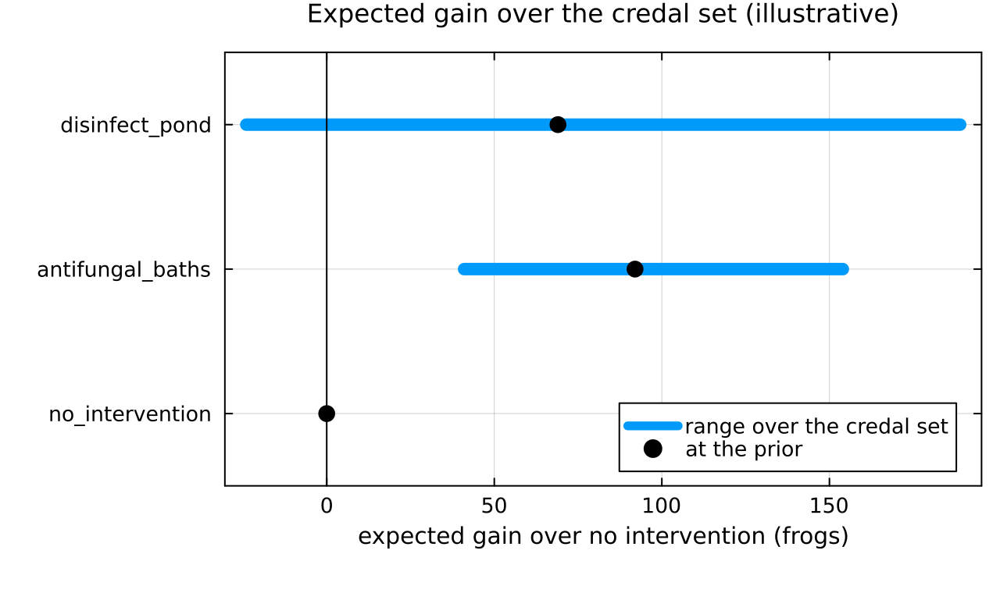

The decision report
Simon Frost
- Motivation
- The problem
- The report
- The report as data
- A Tables.jl table
- The report as text
- What the report leaves out when it cannot be computed
- The weight on infected frogs
- A feasibility filter in a report
- What to take away
- Next
Motivation
The earlier vignettes computed one thing at a time. A decision-maker needs them together: what each rule recommends, how each action compares with doing nothing, how much could be regretted, what information would be worth, and under which assumptions all of it holds. DecisionReport assembles that for one problem. Its purpose is to make a contested decision look contested, and an easy one look easy.
The problem
The frog pond once more. Bd may be absent, at low prevalence or at high prevalence, and the manager can do nothing, give antifungal baths, or drain and disinfect the pond. Utility is uninfected frogs minus w times infected frogs, two years from now. Infected but living frogs are not counted as population: at w = 0 they are ignored, and at w = 1 each cancels one uninfected frog. The report is built at w = 1 and compared with w = 0 at the end.
All numbers are illustrative, not data.
using DecisionAnalysis
using Tables
include(joinpath("..", "_common.jl"))
actions = [:no_intervention, :antifungal_baths, :disinfect_pond]
states = [:absent, :low_prevalence, :high_prevalence]
uninfected = PayoffTable(actions, states, [500 300 100; 470 380 250; 350 340 320])
infected = PayoffTable(actions, states, [0 150 250; 0 60 120; 0 10 20])
prior = FiniteBelief(states, [1 // 2, 3 // 10, 1 // 5])
function bd_problem(w)
return DecisionProblem(infection_payoff(; uninfected, infected, weight=w), prior;
baseline=:no_intervention)
end
problem = bd_problem(1)
problem.payoffPayoffTable{Int64}: 3 actions × 3 states
| action | absent | low_prevalence | high_prevalence |
|---|---|---|---|
no_intervention | 500 | 150 | -150 |
antifungal_baths | 470 | 320 | 130 |
disinfect_pond | 350 | 330 | 300 |
The further ingredients are all optional. A credal set says how far the prior might be wrong: here the stated prior and two alternatives, one more hopeful and one less. The experiments are the swab test and a visual check for sick frogs, which barely separates the states, given by name. A partition of the states names something that could be learned exactly: here, whether Bd is present at all. The objectives are the two counts kept apart, as in the vignette on several objectives. The Hurwicz index is fixed at 1/2.
credal = CredalSet(states, [[1 // 2, 3 // 10, 1 // 5],
[7 // 10, 1 // 5, 1 // 10],
[3 // 10, 3 // 10, 2 // 5]])
swab = Experiment([19//20 2//5 1//20; 1//20 3//5 19//20];
signals=[:negative, :positive], states=states)
visual_check = Experiment([11//20 1//2 9//20; 9//20 1//2 11//20];
signals=[:no_signs, :signs], states=states)Experiment{Rational{Int64}}(2 signals × 3 states, cost 0)The report
report = DecisionReport(problem; credal=credal, experiments=(; swab, visual_check),
partitions=(; presence=[:absent, :present, :present]),
objectives=(; uninfected, fewer_infected=-infected),
hurwicz=1 // 2,
assumptions=["All payoffs are illustrative.",
"Utility is uninfected minus infected frogs " *
"(w = 1); infected but living frogs are not " *
"counted as population."])DecisionReport: 3 actions × 3 states, FiniteBelief Baseline (no intervention): no_intervention
Scores by rule (* marks the chosen actions)
| action | MaxExpectedUtility | Maximin | Maximax | Laplace | Hurwicz | MinimaxRegret | GammaMaximin |
|---|---|---|---|---|---|---|---|
no_intervention | 265 | -150 | 500 * | 166.667 | 175 | 450 | 135 |
antifungal_baths | 357 * | 130 | 470 | 306.667 | 300 | 170 | 289 |
disinfect_pond | 334 | 300 * | 350 | 326.667 * | 325 * | 150 * | 324 * |
First choice by rule
| rule | first choice | baseline |
|---|---|---|
MaxExpectedUtility | antifungal_baths | [not the baseline] |
Maximin | disinfect_pond | [not the baseline] |
Maximax | no_intervention | [the baseline] |
Laplace | disinfect_pond | [not the baseline] |
Hurwicz | disinfect_pond | [not the baseline] |
MinimaxRegret | disinfect_pond | [not the baseline] |
GammaMaximin | disinfect_pond | [not the baseline] |
Minimax regret depends on the menu of actions: adding or removing an action, even one that is never chosen, can change its choice.
Expected gain over the baseline (no_intervention)
| action | expected gain |
|---|---|
no_intervention | 0 |
antifungal_baths | 92 |
disinfect_pond | 69 |
Regret profile
| action | max regret | expected regret |
|---|---|---|
no_intervention | 450 | 144 |
antifungal_baths | 170 | 52 |
disinfect_pond | 150 | 75 |
Robust sets over the credal set
| rule | actions kept |
|---|---|
EAdmissible | antifungal_baths, disinfect_pond |
Maximal | antifungal_baths, disinfect_pond |
IntervalDominance | no_intervention, antifungal_baths, disinfect_pond |
Value of information
| quantity | value | note |
|---|---|---|
| EVPI | 52 | |
| EVSI of swab | 31.1 | can change the decision |
| EVSI of visual_check | 0 | this experiment cannot change the decision |
| EVPPI of presence | 52 | |
| EVPI, Γ-maximin | 45 | |
| EVPI envelope | [40, 66] |
Several objectives: Pareto front, each objective summarised by Expectation
| action | uninfected | fewer_infected | on the front |
|---|---|---|---|
no_intervention | 360 | -95 | - |
antifungal_baths | 399 | -42 | yes |
disinfect_pond | 341 | -7 | yes |
Not dominated: antifungalbaths, disinfectpond.
Assumptions
- Payoffs are conditional expected utilities of each action in each state; higher is better.
- State-wise rules (maximin, maximax, Laplace, Hurwicz, minimax regret) ignore probabilities and range over every state of the table, including any of probability zero.
- Regret is measured against the best feasible action in each state, so it changes when the set of actions changes. Minimax regret therefore depends on the menu of actions: adding or removing an action, even one that is never chosen, can change its choice.
- Tied actions are all reported; the first choice is the tied action that comes first in the payoff table.
- Expected utility, expected regret and EVPI are under the single stated prior; EVPI is the value of learning the state exactly and at no cost.
- EVSI is gross of the cost of the experiment and assumes the stated likelihood. The net value is EVSI minus the cost, which is meaningful only when payoffs and costs are in the same additive units. An experiment can change the decision exactly when its EVSI is positive.
- EVPPI is the value of learning which cell of a partition of the states holds, and nothing more, at no cost.
- The credal set is the convex hull of 3 stated priors; E-admissibility is decided over the whole hull.
- The rule-specific robust EVPI is under Γ-maximin; the envelope is the range of the single-prior EVPI over the credal set.
- The Pareto front keeps the actions that no other action matches on every objective and beats on one; each objective is summarised over the states by Expectation.
- The baseline (no intervention) is no_intervention; gains are payoffs minus the payoff of the baseline in the same state.
- All payoffs are illustrative.
- Utility is uninfected minus infected frogs (w = 1); infected but living frogs are not counted as population.
Reading it from the top:
- Scores by rule. One column per rule, with a star on every chosen action. The minimax-regret column is a loss, so its star is on the smallest number.
- First choice by rule. The single choice of each rule, and whether it is the baseline. Here maximax, which looks only at the best cell of each row, recommends doing nothing, and no other rule does. The line below the table is a standing warning: the minimax-regret choice depends on which actions are on the menu.
- Expected gain over the baseline. What each action adds to no intervention, in expectation under the stated prior.
- Regret profile. Maximum and expected regret by action.
- Robust sets. The actions that the credal set cannot rule out.
- Value of information. EVPI under the stated prior; the EVSI of each named experiment, with a note saying whether it can change the decision; the EVPPI of each named partition; the EVPI of a Γ-maximin decision-maker, and the range of EVPI over the credal set. The visual check is informative, yet the same action is best after either of its results, so the report says that this experiment cannot change the decision: its EVSI is zero.
- Several objectives. The expected score of each action on each objective, and the actions on the Pareto front.
- Assumptions. The conditions under which the numbers hold, including the two supplied above.
On this problem the rules split three ways. Expected utility under the stated prior favours the baths. Maximin, Laplace, Hurwicz at 1/2, minimax regret and Γ-maximin over the three priors favour disinfection. Maximax favours doing nothing. The baths and disinfection are both E-admissible, and doing nothing is not. The report does not settle the choice between them. It shows that the choice turns on how much weight the bad states get, and that information is worth having: EVPI is about a seventh of the expected utility of acting now.
The report as data
The fields hold the same content as objects.
md_table(["rule", "first choice", "is the baseline"],
[[string(r.rule), first_choice(r), first_choice(r) == problem.baseline]
for r in report.results])| rule | first choice | is the baseline |
|---|---|---|
| MaxExpectedUtility | antifungal_baths | - |
| Maximin | disinfect_pond | - |
| Maximax | no_intervention | yes |
| Laplace | disinfect_pond | - |
| Hurwicz | disinfect_pond | - |
| MinimaxRegret | disinfect_pond | - |
| GammaMaximin | disinfect_pond | - |
md_table(["robust rule", "actions kept"],
[[string(nameof(typeof(r.rule))), r.chosen] for r in report.robust])| robust rule | actions kept |
|---|---|
| EAdmissible | antifungal_baths, disinfect_pond |
| Maximal | antifungal_baths, disinfect_pond |
| IntervalDominance | no_intervention, antifungal_baths, disinfect_pond |
report.evpi, report.experiments, report.partitions(52//1, NamedTuple[(name = :swab, evsi = 311//10, cost = 0, net = 311//10, can_change_decision = true), (name = :visual_check, evsi = 0//1, cost = 0, net = 0//1, can_change_decision = false)], NamedTuple[(name = :presence, evppi = 52//1)])report.robust_evpi, report.pareto.chosen(RobustVOI(evpi under GammaMaximin: 45//1; envelope [40//1, 66//1], upper end at the prior Rational{BigInt}[11//25, 53//200, 59//200]), [:antifungal_baths, :disinfect_pond])bullet(report.assumptions)- Payoffs are conditional expected utilities of each action in each state; higher is better.
- State-wise rules (maximin, maximax, Laplace, Hurwicz, minimax regret) ignore probabilities and range over every state of the table, including any of probability zero.
- Regret is measured against the best feasible action in each state, so it changes when the set of actions changes. Minimax regret therefore depends on the menu of actions: adding or removing an action, even one that is never chosen, can change its choice.
- Tied actions are all reported; the first choice is the tied action that comes first in the payoff table.
- Expected utility, expected regret and EVPI are under the single stated prior; EVPI is the value of learning the state exactly and at no cost.
- EVSI is gross of the cost of the experiment and assumes the stated likelihood. The net value is EVSI minus the cost, which is meaningful only when payoffs and costs are in the same additive units. An experiment can change the decision exactly when its EVSI is positive.
- EVPPI is the value of learning which cell of a partition of the states holds, and nothing more, at no cost.
- The credal set is the convex hull of 3 stated priors; E-admissibility is decided over the whole hull.
- The rule-specific robust EVPI is under Γ-maximin; the envelope is the range of the single-prior EVPI over the credal set.
- The Pareto front keeps the actions that no other action matches on every objective and beats on one; each objective is summarised over the states by Expectation.
- The baseline (no intervention) is no_intervention; gains are payoffs minus the payoff of the baseline in the same state.
- All payoffs are illustrative.
- Utility is uninfected minus infected frogs (w = 1); infected but living frogs are not counted as population.
A Tables.jl table
A report is a Tables.jl row table with one row per feasible action, so it can be passed to anything that accepts a table: a DataFrame, a CSV writer, a plotting package.
rows = Tables.rows(report)
Tables.istable(report), length(rows), propertynames(first(rows))(true, 3, (:action, :MaxExpectedUtility, :MaxExpectedUtility_chosen, :Maximin, :Maximin_chosen, :Maximax, :Maximax_chosen, :Laplace, :Laplace_chosen, :Hurwicz, :Hurwicz_chosen, :MinimaxRegret, :MinimaxRegret_chosen, :GammaMaximin, :GammaMaximin_chosen, :max_regret, :expected_regret, :expected_gain_over_baseline, :EAdmissible, :Maximal, :IntervalDominance, :ParetoFront))columns = Tables.columntable(report)
md_table(["column", columns.action...],
[vcat("`$name`", collect(getproperty(columns, name)))
for name in keys(columns) if name != :action])| column | no_intervention | antifungal_baths | disinfect_pond |
|---|---|---|---|
MaxExpectedUtility | 265 | 357 | 334 |
MaxExpectedUtility_chosen | - | yes | - |
Maximin | -150 | 130 | 300 |
Maximin_chosen | - | - | yes |
Maximax | 500 | 470 | 350 |
Maximax_chosen | yes | - | - |
Laplace | 166.67 | 306.67 | 326.67 |
Laplace_chosen | - | - | yes |
Hurwicz | 175 | 300 | 325 |
Hurwicz_chosen | - | - | yes |
MinimaxRegret | 450 | 170 | 150 |
MinimaxRegret_chosen | - | - | yes |
GammaMaximin | 135 | 289 | 324 |
GammaMaximin_chosen | - | - | yes |
max_regret | 450 | 170 | 150 |
expected_regret | 144 | 52 | 75 |
expected_gain_over_baseline | 0 | 92 | 69 |
EAdmissible | - | yes | yes |
Maximal | - | yes | yes |
IntervalDominance | yes | yes | yes |
ParetoFront | - | yes | yes |
The table is shown here with one line per column because it is wide. Each scalar rule contributes its score and a _chosen flag, followed by the regret profile, the expected gain over the baseline, membership of each robust set and of the Pareto front.
The report as text
In a notebook or a Quarto document a report renders as the tables above. At the REPL, or printed, it is plain text that fits 80 columns, with the rules wrapped into blocks of a few columns. This is the text form of a smaller report.
show(stdout, MIME"text/plain"(), DecisionReport(problem; experiments=(; swab)))DecisionReport: 3 actions × 3 states, FiniteBelief
Baseline (no intervention): no_intervention
Scores by rule (* marks the chosen actions)
action MaxExpectedUtility Maximin Maximax Laplace
---------------- ------------------ ------- ------- ---------
no_intervention 265 -150 500 * 166.667
antifungal_baths 357 * 130 470 306.667
disinfect_pond 334 300 * 350 326.667 *
action MinimaxRegret
---------------- -------------
no_intervention 450
antifungal_baths 170
disinfect_pond 150 *
First choice by rule
rule first choice baseline
------------------ ---------------- ------------------
MaxExpectedUtility antifungal_baths [not the baseline]
Maximin disinfect_pond [not the baseline]
Maximax no_intervention [the baseline]
Laplace disinfect_pond [not the baseline]
MinimaxRegret disinfect_pond [not the baseline]
Minimax regret depends on the menu of actions: adding or removing an action,
even one that is never chosen, can change its choice.
Expected gain over the baseline (no_intervention)
action expected gain
---------------- -------------
no_intervention 0
antifungal_baths 92
disinfect_pond 69
Regret profile
action max regret expected regret
---------------- ---------- ---------------
no_intervention 450 144
antifungal_baths 170 52
disinfect_pond 150 75
Value of information
quantity value note
------------ ----- -----------------------
EVPI 52
EVSI of swab 31.1 can change the decision
Assumptions
1. Payoffs are conditional expected utilities of each action in each state;
higher is better.
2. State-wise rules (maximin, maximax, Laplace, Hurwicz, minimax regret)
ignore probabilities and range over every state of the table, including any
of probability zero.
3. Regret is measured against the best feasible action in each state, so it
changes when the set of actions changes. Minimax regret therefore depends
on the menu of actions: adding or removing an action, even one that is
never chosen, can change its choice.
4. Tied actions are all reported; the first choice is the tied action that
comes first in the payoff table.
5. Expected utility, expected regret and EVPI are under the single stated
prior; EVPI is the value of learning the state exactly and at no cost.
6. EVSI is gross of the cost of the experiment and assumes the stated
likelihood. The net value is EVSI minus the cost, which is meaningful only
when payoffs and costs are in the same additive units. An experiment can
change the decision exactly when its EVSI is positive.
7. The baseline (no intervention) is no_intervention; gains are payoffs minus
the payoff of the baseline in the same state.What the report leaves out when it cannot be computed
The content depends on the belief. With a scenario set there are no probabilities, so the report has the state-wise rules and the maximum regret, and no expected utility and no value of information. The gain over the baseline is shown as a range: the smallest and the largest gain of each action over the scenarios.
scenario_report = DecisionReport(DecisionProblem(problem.payoff, ScenarioSet(states);
baseline=:no_intervention))DecisionReport: 3 actions × 3 states, ScenarioSet Baseline (no intervention): no_intervention
Scores by rule (* marks the chosen actions)
| action | Maximin | Maximax | Laplace | MinimaxRegret |
|---|---|---|---|---|
no_intervention | -150 | 500 * | 166.667 | 450 |
antifungal_baths | 130 | 470 | 306.667 | 170 |
disinfect_pond | 300 * | 350 | 326.667 * | 150 * |
First choice by rule
| rule | first choice | baseline |
|---|---|---|
Maximin | disinfect_pond | [not the baseline] |
Maximax | no_intervention | [the baseline] |
Laplace | disinfect_pond | [not the baseline] |
MinimaxRegret | disinfect_pond | [not the baseline] |
Minimax regret depends on the menu of actions: adding or removing an action, even one that is never chosen, can change its choice.
Range of the gain over the baseline (no_intervention), over the scenarios
| action | lowest gain | highest gain |
|---|---|---|
no_intervention | 0 | 0 |
antifungal_baths | -30 | 280 |
disinfect_pond | -150 | 450 |
Regret profile
| action | max regret |
|---|---|
no_intervention | 450 |
antifungal_baths | 170 |
disinfect_pond | 150 |
Value of information
not defined without probabilities
Assumptions
- Payoffs are conditional expected utilities of each action in each state; higher is better.
- State-wise rules (maximin, maximax, Laplace, Hurwicz, minimax regret) ignore probabilities and range over the states of the scenario set.
- Regret is measured against the best feasible action in each state, so it changes when the set of actions changes. Minimax regret therefore depends on the menu of actions: adding or removing an action, even one that is never chosen, can change its choice.
- Tied actions are all reported; the first choice is the tied action that comes first in the payoff table.
- The baseline (no intervention) is no_intervention; gains are payoffs minus the payoff of the baseline in the same state, and no expected gain is shown because the belief has no single prior: the range of the gain over the scenarios is shown in its place.
With a credal set as the belief of the problem itself, the rules that need one prior are left out and the robust rules are kept. The expected gain over the baseline is again a range, this time of the expected gain over the priors in the set.
credal_report = DecisionReport(DecisionProblem(problem.payoff, credal;
baseline=:no_intervention))
[string(r.rule) for r in credal_report.results],
credal_report.evpi === nothing, credal_report.expected_gain === nothing(["Maximin", "Maximax", "Laplace", "MinimaxRegret", "GammaMaximin"], true, true)md_table(["action", "lowest expected gain", "highest expected gain"],
[[a, l, u] for (a, l, u) in zip(actions, credal_report.gain_range.lower,
credal_report.gain_range.upper)])| action | lowest expected gain | highest expected gain |
|---|---|---|
no_intervention | 0 | 0 |
antifungal_baths | 41 | 154 |
disinfect_pond | -24 | 189 |
The figure shows the same ranges. The dot is the expected gain at the single prior of the first report, which is one of the priors in the set. Antifungal baths gain over no intervention at every prior in the set. Disinfecting the pond has the wider range: it can gain more, and at one end of the set it loses.
lower = Float64.(credal_report.gain_range.lower)
upper = Float64.(credal_report.gain_range.upper)
plt = Plots.plot(; yticks=(1:3, String.(actions)), ylims=(0.5, 3.5), legend=:bottomright,
xlabel="expected gain over no intervention (frogs)",
title="Expected gain over the credal set (illustrative)")
for i in 1:3
Plots.plot!(plt, [lower[i], upper[i]], [i, i]; color=1, linewidth=8,
label=(i == 1 ? "range over the credal set" : ""))
end
Plots.scatter!(plt, Float64.(report.expected_gain), 1:3; color=:black, markersize=6,
label="at the prior")
Plots.vline!(plt, [0]; color=:black, linewidth=1, label="")
png_figure(plt)
The weight on infected frogs
The same report at w = 0, where only uninfected frogs count.
report0 = DecisionReport(bd_problem(0); credal=credal, experiments=(; swab, visual_check),
hurwicz=1 // 2)
md_table(["rule", "first choice, w = 0", "first choice, w = 1"],
[[string(r0.rule), first_choice(r0), first_choice(r1)]
for (r0, r1) in zip(report0.results, report.results)])| rule | first choice, w = 0 | first choice, w = 1 |
|---|---|---|
| MaxExpectedUtility | antifungal_baths | antifungal_baths |
| Maximin | disinfect_pond | disinfect_pond |
| Maximax | no_intervention | no_intervention |
| Laplace | antifungal_baths | disinfect_pond |
| Hurwicz | antifungal_baths | disinfect_pond |
| MinimaxRegret | antifungal_baths | disinfect_pond |
| GammaMaximin | antifungal_baths | disinfect_pond |
md_table(["quantity", "w = 0", "w = 1"],
vcat([["expected gain over no intervention: `$a`", report0.expected_gain[i],
report.expected_gain[i]] for (i, a) in enumerate(actions)],
[["EVPI", report0.evpi, report.evpi],
["EVSI of the swab", report0.evsi, report.evsi],
["E-admissible actions", report0.robust[1].chosen,
report.robust[1].chosen]]))| quantity | w = 0 | w = 1 |
|---|---|---|
expected gain over no intervention: no_intervention | 0 | 0 |
expected gain over no intervention: antifungal_baths | 39 | 92 |
expected gain over no intervention: disinfect_pond | -19 | 69 |
| EVPI | 29 | 52 |
| EVSI of the swab | 6.25 | 31.1 |
| E-admissible actions | antifungal_baths | antifungal_baths, disinfect_pond |
At w = 0 disinfection has a negative expected gain: it is worse than doing nothing when the infected frogs it prevents are not counted. At w = 1 it gains 69. A report is a statement about one utility, and the weight belongs among its assumptions.
A feasibility filter in a report
Infeasible actions are left out of every part of a report, and the assumptions say so. If the pond cannot be drained this year:
restricted = DecisionProblem(problem.payoff, prior; baseline=:no_intervention,
feasible=[:no_intervention, :antifungal_baths])
r = DecisionReport(restricted)
r.evpi, last(r.assumptions, 3)(15//1, ["Infeasible actions are excluded throughout: disinfect_pond.", "Expected utility, expected regret and EVPI are under the single stated prior; EVPI is the value of learning the state exactly and at no cost.", "The baseline (no intervention) is no_intervention; gains are payoffs minus the payoff of the baseline in the same state."])Removing an action lowers EVPI here, because there is less to choose between once the state is known.
What to take away
DecisionReport(problem; credal, experiments, partitions, objectives, hurwicz, assumptions)puts every applicable rule side by side with the regret profile, the gain of each action over the baseline, the robust sets, the value of each named experiment and partition, and the Pareto front of the named objectives.- It says of each experiment whether it can change the decision, and warns that the minimax-regret choice depends on the menu of actions.
- It renders as tables in a document and prints as aligned text within 80 columns.
- It states its assumptions, and takes more through the
assumptionskeyword. Put the utility there, including the weight on infected animals and the fact that the numbers are illustrative. - It says for every rule whether the recommendation is the no-intervention baseline.
- It is a Tables.jl table with one row per feasible action.
- Parts that are not defined for the belief are left out, not guessed.
Next
Exact arithmetic and certificates shows that these numbers are exact, and how to have them checked by a program that shares no code with this package.